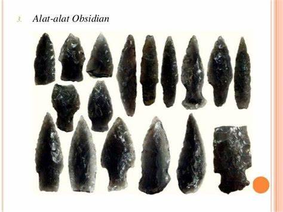
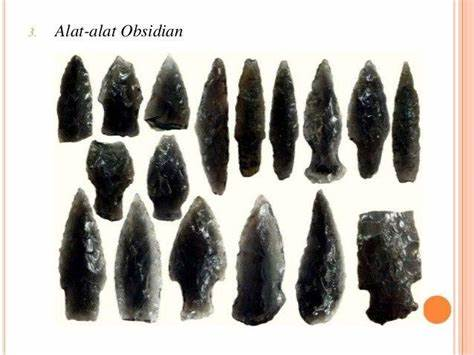

Apa Saja Hasil Budaya pada Zaman Neolitikum?
Zaman Neolitikum menghasilkan berbagai benda dan peralatan yang menunjukkan kemajuan teknologi dan kreativitas manusia. Pada masa ini, manusia mulai menciptakan alat-alat pertanian, kerajinan tembikar, dan seni yang mencerminkan kehidupan mereka.
Beberapa Contoh Hasil Budaya:
- Beliung persegi.
- Kapak Lonjong.
- Alat-alat obsidian.
- Mata panah.
- Gerabah.
- Alat pemukul dari kayu.
- Perhiasan.
 


Untuk informasi lebih lanjut, silakan kembali ke halaman utama.